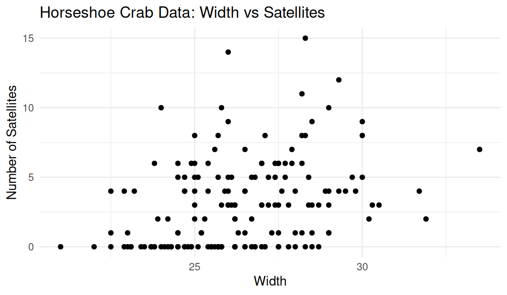

Bootstrap Crab Data Analysis: When Classical Tests and Resampling Disagree
Introduction
When we estimate a statistic from a sample, like a mean, a median, or a regression coefficient, that estimate comes with uncertainty. The reason is simple: our sample is not the whole population. If we took a different sample from the same population, we would not get exactly the same answer.
So most of the time we want two things:
the estimate itself, for example (\(\bar{x}\)) for a mean, or (\(\hat\beta_2\)) for the shell colour effect in the crab model, and
uncertainty around it: standard errors, confidence intervals, and p-values.
The usual uncertainty formulas often rely on large samples. That often works, but sometimes the data is messy (small \(n\), many zeros, or results that are not nicely symmetric). In those cases, resampling can help. The bootstrap is a simple idea: treat your sample as the best version of the population you have, resample from it many times, and see how much your estimate changes. That spread gives you the uncertainty.
Here is a small example before we go to the crabs. Suppose you have a sample \(x_1,\dots,x_n\) and you want the mean (\(\bar x\)) and the standard error of the mean. Bootstrap does this by sampling \(n\) values with replacement, computing the mean, and repeating that many times.
set.seed(1)# Example sample (pretend these are measurements)x <-c(12.1, 10.4, 11.7, 9.9, 10.8, 13.2, 11.0, 10.6, 12.5, 9.8)n <-length(x)B <-2000# Observed meanx_bar <-mean(x)# Storage for bootstrap meansboot_means <-numeric(B)# Bootstrap loopfor (b in1:B) { x_star <-sample(x, size = n, replace =TRUE) # resample with replacement boot_means[b] <-mean(x_star) # mean in the resample}# Bootstrap SE of the mean = SD of bootstrap meansse_boot <-sd(boot_means)# 95% percentile CI for the meanci_boot <-quantile(boot_means, c(0.025, 0.975))x_bar
[1] 11.2
se_boot
[1] 0.3305444
ci_boot
2.5% 97.5%
10.59975 11.83075
With that mindset, the crab question is the same idea but inside a regression model. We ask whether larger female crabs tend to have more satellite males, and whether shell colour still matters after we account for shell width. Bootstrap helps us see if the usual Poisson regression conclusions still hold when we estimate uncertainty by resampling the crabs.
Data
This post uses the horseshoe crab dataset that comes with the glm2 package in R. The data are from a study of female horseshoe crabs. For each female crab, the dataset records the number of “satellite” males attached to her, plus measurements such as her shell width and shell colour.
Our outcome is the number of satellites, so it is a count. A simple starting point for count data is Poisson regression with a log link. Here we model the expected number of satellites as a function of shell width, and then check whether adding shell colour improves the model.
ggplot(crabs, aes(x = Width, y = Satellites)) +geom_point() +labs(title ="Horseshoe Crab Data: Width vs Satellites",x ="Width",y ="Number of Satellites" ) +theme_minimal()

Figure 1: Width vs satellites: larger crabs tend to have more satellites, but variability is high and many counts are zero.
The relationship isn’t clean or linear-looking. It’s noisy, with many zeros across the width range. Still, there’s a visible tendency for larger widths to have higher counts.
Does shell colour matter after adjusting for width?
Table 1: Likelihood ratio test comparing reduced vs full Poisson regression.
Model
Resid. Df
Resid. Dev.
Df
$\chi^2$
$p$-value
Satellites ~ Width
171
567.8786
NA
NA
NA
Satellites ~ Width + Dark
170
560.9576
1
6.92101
0.0085189
Interpretation: the LRT p-value (here (p=0.0085)) suggests that adding Dark improves the fit, so we reject (H_0) at the 5% level. Under this approach, colour looks associated with satellite counts after accounting for width.
Parametric bootstrap p-value (model-based)
The LRT relies on a chi-square approximation that is often good, but it is an approximation. A parametric bootstrap checks the same null using simulation:
Fit the reduced model (null)
Simulate many datasets from the fitted null
Refit both models each time
Recompute the LRT statistic each time
Compare the observed statistic to this simulated null distribution
The parametric bootstrap p-value is \(p \approx 0.009\). In this dataset, it leads to the same practical conclusion as the classical LRT: colour still matters after width is included.
Bootstrap intervals for predictions (more tangible than coefficients)
Rather than only talking about \(\beta_2\) (a log-scale parameter), we can bootstrap predicted mean satellite counts at specific widths for dark vs non-dark shells.
a simple percentile bootstrap CI looks like it touches or crosses 0
That isn’t magical contradiction; it’s usually about how the uncertainty is being approximated:
The percentile bootstrap CI for a regression coefficient can be a bit crude if the bootstrap distribution is skewed.
The LRT is testing a different object (deviance difference), and often behaves better in GLMs.
If you want bootstrap intervals for coefficients that align better with hypothesis testing, the usual upgrade is BCa intervals (bias-corrected and accelerated), or using a bootstrap test directly on \(\beta_2\).
The tests (LRT and parametric bootstrap) consistently reject \(H_0\). The simple percentile bootstrap CI for \(\beta_2\) is closer to the boundary and may include 0 due to skew and the limitations of percentile intervals for GLM coefficients.